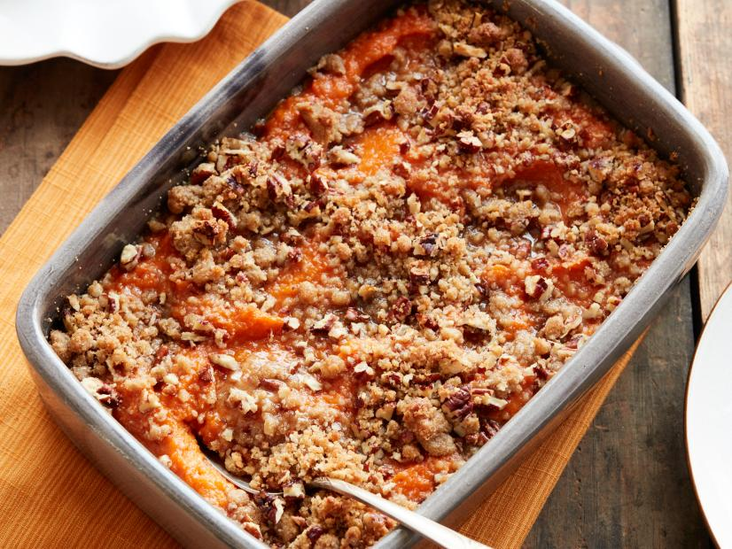

Sweet Potato Casserole

Description:
A sweet sweet potato dessert that's easier then pie.
Ingredients:
Filling:
- Butter
- Sweet potatoes
- Milk
- Brown Sugar
- Vanilla
- Salt
- Eggs
Topping:
- Flour
- Brown sugar
- Butter
- Salt
- Pecans
Directions:
- Peel and cube sweet potatoes. Cook sweet potatoes in boiling water for 15-20 min.
- Drain sweet potatoes and leave to cool. Mash until desired teexture.
- For filling, preheat oven to 350 degrees. Grease baking dish.
- Mix together all filling ingredients and transfer to baking dish.
- Mix topping ingredients together. Spread even layer over top of filling.
- Bake 25-30 min, until set in center and topping is desired doneness.
Adapted from All recipes